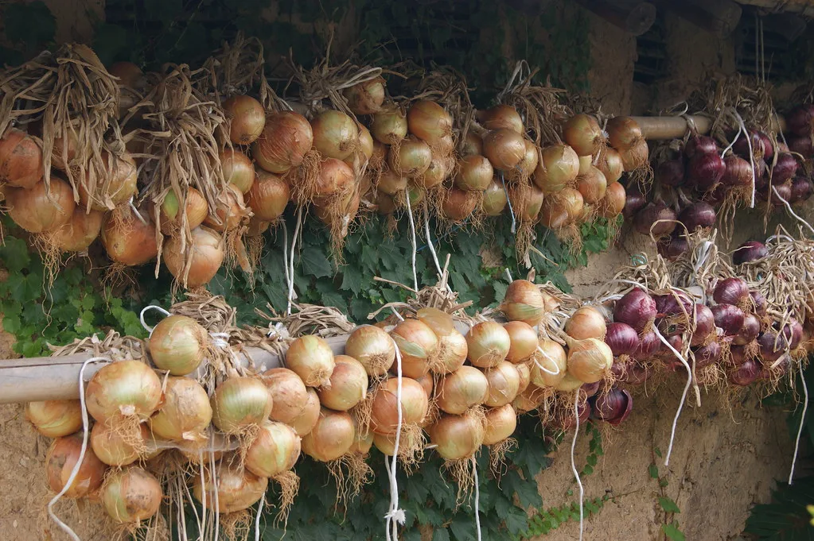
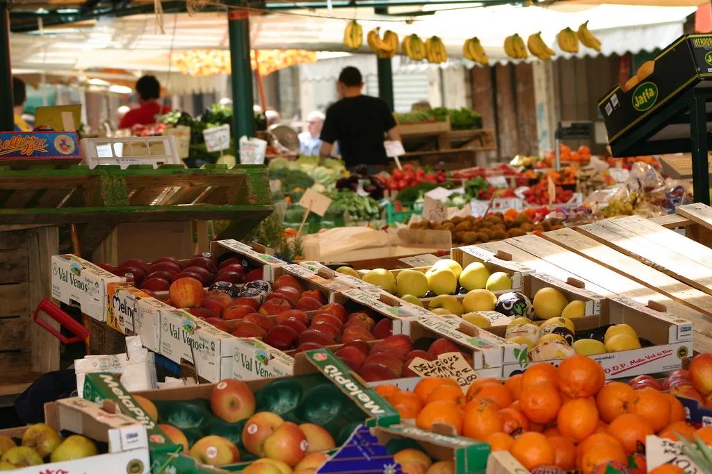

"추석 물가안정 특별대책기간" 오늘 시작…바가지요금 신고 24시간 내 현장조사
행정안전부가 11일부터 추석 연휴 마지막 날인 27일까지를 '추석 물가안정 특별대책기간'으로 지정하고, 전국 지방자치단체별로 물가대책 종합상황실을 가동한다고 밝혔다. 추석 연휴(9월 24~26일)를 2주가량 앞두고 장바구니 체감물가를 낮추는 동시에, 성수기를 틈탄 바가지요금 등 불공정 행위를 집중 단속하겠다는 취지다. 정부는 이번 대책기간을 통해 소비자 물가 부담을 실질적으로 줄이고, 명절 특수를 악용한 부당 요금 징수 관행에도 제동을 걸겠다는 방침이다.
가장 눈에 띄는 조치는 바가지요금 신고 체계다. 소비자는 지역번호에 이어 120번을 누르거나 관광안내전화 1330, 또는 현장에 비치된 QR코드를 통해 부당 요금을 신고할 수 있다. 신고가 접수되면 관할 지방자치단체가 원칙적으로 24시간 이내에 현장조사에 착수하도록 해, 명절 대목에 일시적으로 발생하는 바가지요금 문제에 신속하게 대응하겠다는 계획이다. 전통시장, 유원지, 관광지 등 명절 기간 방문객이 몰리는 장소가 집중 점검 대상으로 꼽힌다.

성수품 공급도 역대 최대 규모로 확대된다. 정부는 배추·무 등 채소류를 평시 대비 1.9배 수준인 1만8000톤, 사과·배 등 과일을 평시보다 3배 이상 늘린 3만2000톤 공급하기로 했다. 축산물 역시 도축·출하 물량을 평시의 1.3배로 늘려 소·돼지고기 9만톤, 닭고기 1만7000톤을 시장에 풀 계획이다. 전체 13대 성수품 공급량은 18만3000톤으로, 평시의 1.6배에 달해 역대 최대 규모라는 게 정부 설명이다.
가격 부담을 낮추기 위한 할인 지원 예산도 역대 최대인 590억원이 투입된다. 국산 농축산물은 최대 40%까지 할인된 가격에 구매할 수 있으며, 9월 16일부터 20일까지 전국 전통시장에서는 농축수산물을 구매하면 구매액의 약 30%를 온누리상품권으로 환급해주는 행사가 진행된다. 서울시는 42곳의 전통시장에서 자체 할인에 더해 이 환급 혜택을 함께 적용하기로 했고, 충남 등 일부 지역은 1인당 환급 한도를 2만원으로 정해 운영한다.

지역 소비 활성화를 위한 지역화폐 지원책도 함께 추진된다. 충남 천안·공주·서산 등 7개 시·군은 지역사랑상품권 구매 한도를 상향하고, 당진·홍성은 발행액 자체를 확대해 명절 기간 지역 내 소비를 뒷받침하기로 했다. 이 밖에도 여러 지방자치단체가 지역 특산물 할인 판매전이나 전통시장 연계 행사를 준비하고 있어, 명절 대목 소비가 대형 유통망뿐 아니라 지역 상권으로도 고르게 분산될 수 있을지 주목된다. 아울러 추석 연휴인 9월 24일부터 27일까지는 고속도로 통행료가 면제돼, 귀성·귀경길 교통비 부담도 다소 줄어들 전망이다.
정부는 이번 특별대책기간 운영을 통해 성수품 가격을 조사해 공개하는 한편, 지방정부별 상황실을 통해 물가 동향을 상시 점검할 계획이다. 매년 명절마다 반복되는 바가지요금 논란과 장바구니 물가 부담을 이번 기회에 구조적으로 줄여보겠다는 것이 정부의 목표지만, 실제 현장에서 신고·단속 체계가 얼마나 실효성 있게 작동할지는 연휴가 지나야 가늠할 수 있을 것으로 보인다. 물가 안정 대책의 체감 효과는 결국 신고 이후 현장조사가 얼마나 신속하게 이뤄지고, 적발된 사례에 실질적인 제재가 뒤따르는지에 달려 있다는 목소리도 나온다.